LOOK360 · 360 작업실 · 실제 흐름 결과
기본값 🤖 AI + 🎨 색 노이즈(강) + 샤픈 보통
마트 입구 · 지하주차장 · 편의점 내부 (2024-10-25 마트 촬영 원본 NEF 사본)
2026-10-24 · ←/→ 넘기기 · 비교 화면에서 숫자키 1~4 로 바꿔 보기 · F 전체화면
| 처리 전 (톤만) | 같은 렌더에서 노이즈 제거만 뺀 것 (보관된 선형 파노라마에 같은 톤) |
| ④ 렌더 결과 (🤖 AI + 🎨 색) | ② 에서 고른 노이즈 제거가 ④ 최종 렌더에 들어간 stitched.jpg — 포토샵(⑤)으로 가는 판 |
| ⑦ 타일 입력 (+✨ 샤픈 normal) | 리터치·모자이크까지 끝난 최종본에 샤픈(밝기만) — 실제 타일에 들어간 그림 |
| 참고: 노이즈 그대로 샤픈 | 노이즈를 안 걷고 샤픈만 하면 — 알갱이가 커지는 걸 보여주는 참고 |
모두 실제 작업실 작업 큐로 돌린 결과 (현상 → 정렬 → 미리보기 → ④ 렌더 → ⑤ 보정 없이 진행 → ⑦ 타일). 12000px 파노라마의 100% 확대.
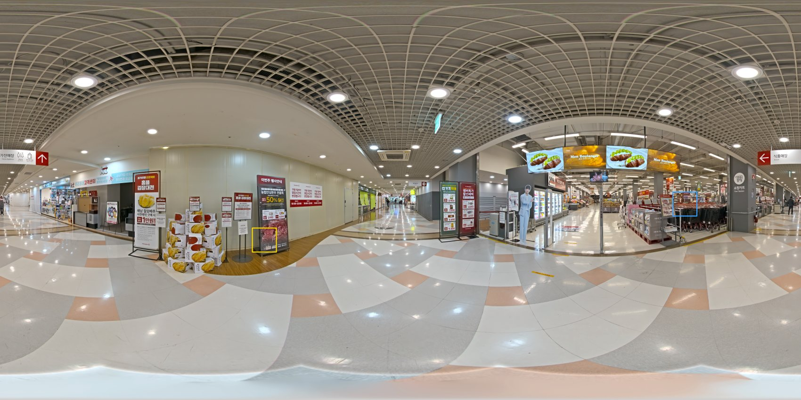
노란 상자 = 어두운 곳(노이즈) · 파란 상자 = 디테일(글씨·모서리) — 천정·바닥 빼고 가운데 띠에서 자동으로 고름
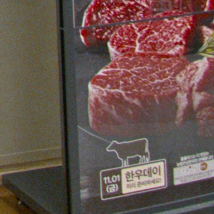
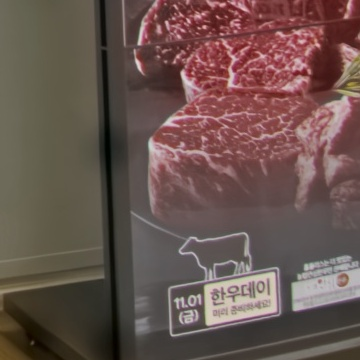
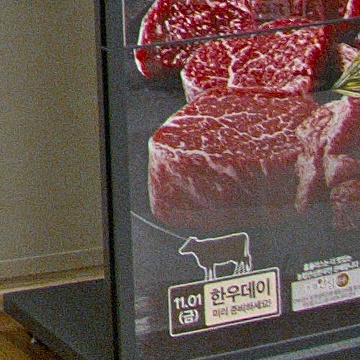
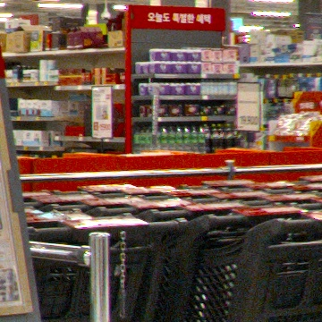
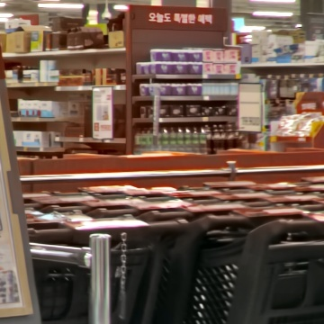
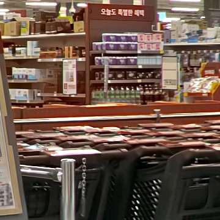
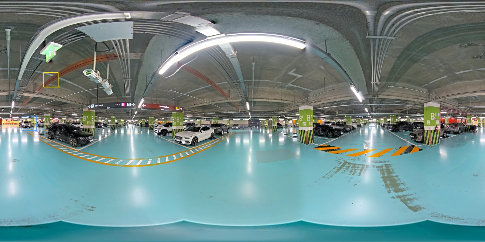
노란 상자 = 어두운 곳(노이즈) · 파란 상자 = 디테일(글씨·모서리) — 천정·바닥 빼고 가운데 띠에서 자동으로 고름
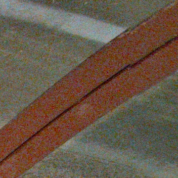
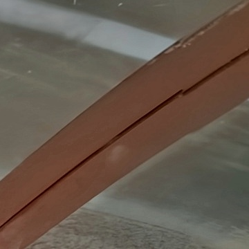
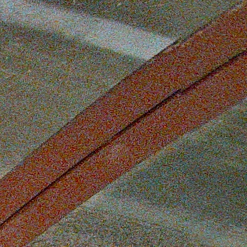
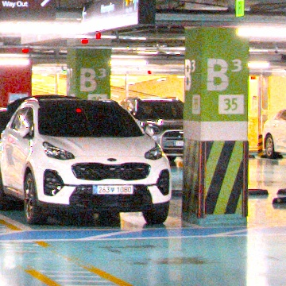
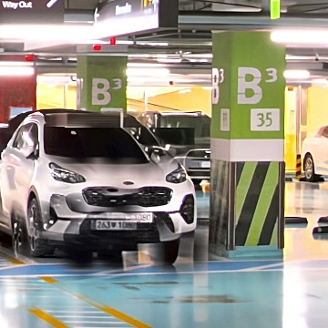
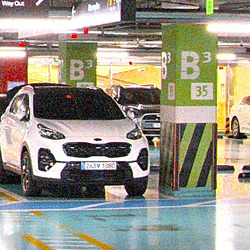
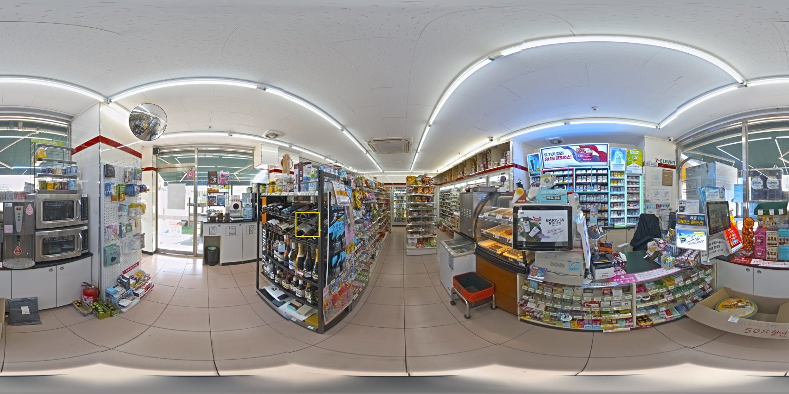
노란 상자 = 어두운 곳(노이즈) · 파란 상자 = 디테일(글씨·모서리) — 천정·바닥 빼고 가운데 띠에서 자동으로 고름
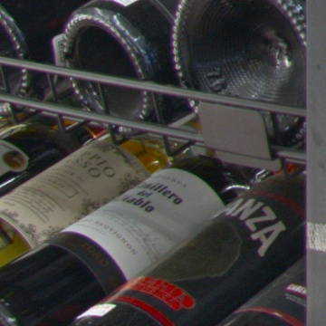
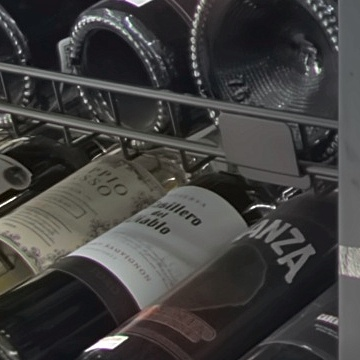
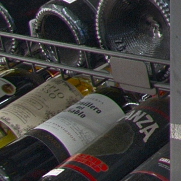
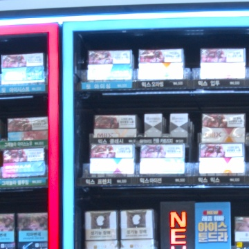
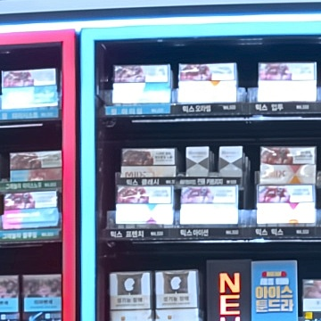
| 걸린 시간 | 렌더 1회에 노이즈 제거 71~89초 추가 (12000px 한 장, 사진 장수와 무관) — 렌더 전체는 9~10분 |
| 작업 순서 | ② 톤·색에서 고름 → ④ 렌더에 적용 → ⑤ 포토샵은 깨끗한 판으로 → ⑦ 타일 직전에만 샤픈 |
| 기본값 | 🤖 AI + 🎨 색(강) + 샤픈 보통 — 주간회의에서 바뀌면 값만 바꾸면 돼 |
| flat | 다 만든 이미지를 올리는 거라 노이즈·샤픈 기본 끔 |
작업실 ② 톤·색 카드 「노이즈 제거」 · ⑦ 「최종 샤픈」에서 장면마다 바꿀 수 있어